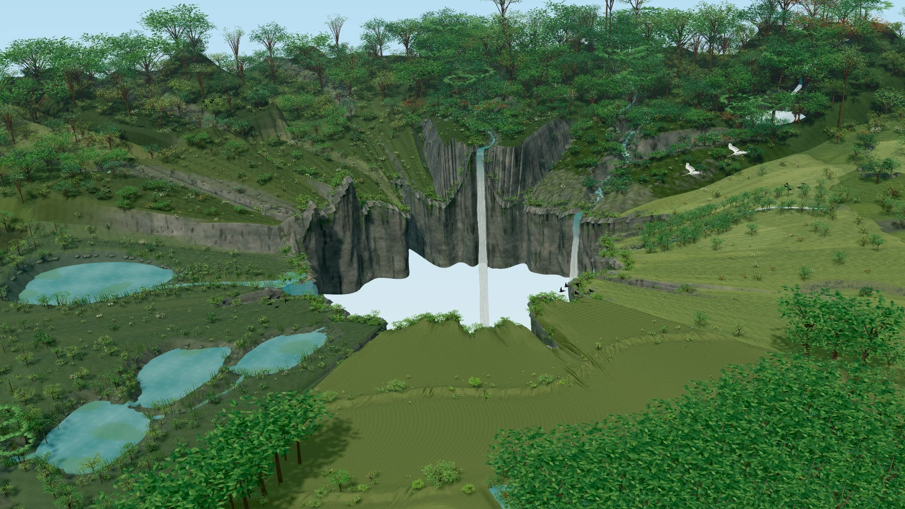

nourishland
KNOWLEDGE, CONNECTED TO LIFE
☰
Education
Platform
The pilot
About
A living world.
A world to discover.
Scroll or swipe to explore
↓
＋
Follow the water
＋
Explore living systems
Explore the complete world
↗